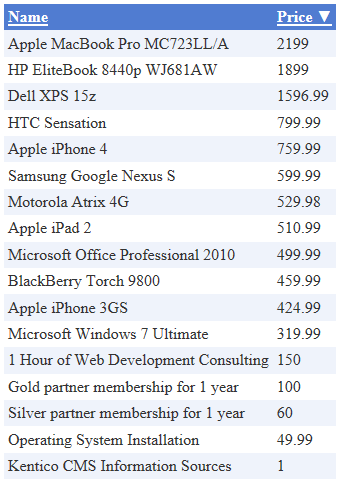

CMSDataGrid
The CMSDataGrid control displays page data in a customizable table.
Provides a built-in data source for loading Kentico pages from the database. You do not need to write code for retrieving and binding the data.
You can use the Visual Studio DataGrid designer to set up the appearance and behavior of the grid.
Inherits from: BasicDataGrid
Web part equivalent (portal engine): Grid
Getting started
The tutorial shows how to use the CMSDataGrid to display a table containing all products from the Products section of the sample Corporate Site (CMS.Smartphone, CMS.Laptop, CMS.Software, CMS.Ebook and CMS.Product pages):
Create a new Web form in your web project.
Switch to the Design tab and drag a CMSDataGrid control from the toolbox onto the form.
Set the following properties for the CMSDataGrid:
ClassNames: cms.smartphone;cms.laptop;cms.software;cms.ebook;cms.product
Path: /Products/%
This tells the control which page types to read and specifies the Path to the products section.
Right-click the CMSDataGrid on the form, select AutoFormat... and choose a scheme.
Right-click the CMSDataGrid again, select Show Smart Tag and then Property Builder.
The CMSDataGrid1 Properties dialog opens.
On the General tab, check Allow sorting.
Switch to the Columns tab and uncheck Create columns automatically at run time.
Add a new Bound Column from the Available columns list to the Selected columns list. Enter the following values into the appropriate fields:
Header text: Name
Data Field: SKUName
Sort expression: SKUName
Add another Bound column. Enter the following values in the appropriate fields:
Header text: Price
Data Field: SKUPrice
Sort expression: SKUPrice
Click OK.
Save the web form.
Right-click the web form in the Solution explorer and select View in Browser.
The resulting page displays a table similar to the following (depending on the chosen scheme):

Configuration
You can set the following properties for the CMSDataGrid control:
|
CMSDataGrid properties |
Description |
Sample value |
|
DataBindByDefault |
Indicates whether the control automatically performs data binding during the Init event. (Inherited from BasicDataGrid) |
|
|
HideControlForZeroRows |
Indicates whether the control should be hidden when no data is loaded. The default value is False. (Inherited from BasicDataGrid) |
|
|
PageSize |
Sets the number of rows displayed per page. |
|
|
ProcessSorting |
Indicates whether the control processes the grid sorting in the DataView instead of on the SQL level. (Inherited from BasicDataGrid) |
|
|
RelatedData |
Custom data connected to the object. (Inherited from BasicDataGrid) |
|
|
SelectedItemTransformationName |
Name of the transformation applied to selected items. Enter the transformation name in format <page type code name>.<transformation name>. |
|
|
SetFirstPageAfterSortChange |
Indicates if the page index resets to the first page when sorting is changed. (Inherited from BasicDataGrid) |
|
|
SortAscending |
Indicates whether the grid sorting is in ascending order. The default value is True. (Inherited from BasicDataGrid) |
|
|
SortField |
Gets or sets the sort field. Allows you to set the default sort field. (Inherited from BasicDataGrid) |
"NewsReleaseDate" |
|
ZeroRowsText |
Text shown if no records are found. This text is not visible when the control is hidden by the HideControlForZeroRows property. (Inherited from BasicDataGrid) |
"No records found" |
|
Page filtering properties |
Description |
Sample value |
|
CheckPermissions |
Indicates if the control checks the permissions of the user viewing the page. If the value is false (default value) no permissions are checked. If true, the control only loads pages for which the user viewing the page has read permissions. |
|
|
ClassNames |
Specifies which page types the control loads and displays. Identify page types through their code names, separated by semicolons (;). You can use the * wildcard as a substitute for any number of characters. For example Product.* includes the page types Product.Camera, Product.CellPhone, Product.Computer etc. If the property is left empty, the control retrieves all page types by default. In the case of menu and navigation controls, only CMS.MenuItem pages are loaded by default. Note: If the control loads all page types (empty value), only the data from the View_CMS_Tree_Joined and the COM_SKU table (for product pages) are available in the retrieved data. The specific fields of individual page types are not included. You need to keep this in mind when writing the code of transformations, WHERE conditions, ORDER BY expressions etc. |
"cms.news" |
|
CombineWithDefaultCulture |
Indicates whether the control loads pages from the website's default culture version if the required pages are not available in the user's selected culture. Only applies if you do not set the TreeProvider property manually. |
|
|
CultureCode |
Specifies the culture code of the pages that the control loads. If not specified, the control automatically uses the preferred culture of the user viewing the page. |
"en-us" |
|
DataSource |
Allows you to manually assign a DataSet or DataTable containing the pages that the control displays. You do not need to set this property for standard scenarios. |
|
|
FilterOutDuplicates |
Indicates if the control filters out duplicated (linked) pages from the data. |
|
|
MaxRelativeLevel |
Specifies the maximum number of content tree sub-levels from which the control displays pages. This number is relative, i.e. counted from the location of the page where the control is placed, not from the root of the website. Enter -1 to load all child pages. |
|
|
Path |
Path of the pages that the control loads. |
|
|
SelectOnlyPublished |
If enabled, the control only loads published pages. |
|
|
TreeProvider |
Gets or sets the TreeProvider object used by the control to access page data. If you do not assign a TreeProvider object, the control automatically creates a new instance. |
|
Page relationship properties |
Description |
Sample value |
|
RelationshipWithNodeGUID |
If set, the control only loads pages that are related to the page with the specified NodeGUID. You can find the Node GUID of pages on the Properties -> General tab in the Pages application. Enter "11111111-1111-1111-1111-111111111111" to dynamically load pages related to the current page. |
"36f8c4bc-f702-4736-8a25-a82295668794" |
|
RelatedNodeIsOnTheLeftSide |
Determines whether the page specified through the RelationshipWithNodeGUID property is on the left or right side of the relationship.
|
|
|
RelationshipName |
Specifies the type of the page relationship. Enter the code name of the relationship. |
"isrelatedto" |
|
CMS Base control properties |
Description |
Sample value |
|
CacheDependencies |
List of the cache keys on which the control's cached data depends. When the specified cache items change, the control clears its cache. Each item (dependency) must be on one line. If you leave this property empty, the control uses default dependencies. See also: Setting cache dependencies, Configuring caching |
cms.user|all |
|
CacheItemName |
Sets the name of the cache key used to store the control's content. If you leave the value empty, the system generates a default name containing variables, such as the control ID, the selected culture and the name of the user who loaded the page. The system cache is shared by all pages in your application, so cache item names representing different data must be unique globally. If you have multiple controls that load the same data, you can share the cache keys between the controls (optimizes loading of content and avoids redundant data in the cache). If the content displayed by the control depends on variables, such as URL parameters, you can set a custom name dynamically in the page's code behind. See also: Caching the data of page components, Configuring caching |
"CMSRepeaterNews" + |
|
CacheMinutes |
Sets the number of minutes for which the control caches content retrieved from the database.
Allows you to set up caching of content so that the control doesn't have to retrieve content from the database on each request. The caching mechanism uses absolute expiration time. This means that cache items expire after a specified time period even if the page containing the control wasn't requested. See also: Caching the data of page components, Configuring caching |
|
|
FilterControl |
Gets or sets the filter control used to limit the data read by the control. |
|
|
FilterName |
Gets or sets the code name of the filter control used to limit the data read by this control. |
|
|
OrderBy |
Gets or sets the ORDER BY clause of the SQL query that the control uses to load data. |
"NewsReleaseDate DESC" |
|
SelectedColumns |
Database table columns that the control loads for pages, separated by commas ( , ). If null or empty, the control loads all available columns. |
|
|
SiteName |
Specifies the code name of the Kentico website for which the control loads data. |
|
|
StopProcessing |
If true, the control stops all processing — does not load or display any data or other HTML output. |
|
|
TopN |
Specifies the maximum number of database records that the control loads. |
|
|
WhereCondition |
Gets or sets the WHERE clause of the SQL query that the control uses to loads data. |
"ProductPrice > 100" |
Note: The CMSDataGrid is derived from the ASP.NET DataGrid control, so you can also set any of the base properties.
Appearance and styling
You can modify the appearance of the CMSDataGrid control by setting the standard properties available for the ASP.NET DataGrid control (inherited through the BasicDataGrid).
A common way to set the appearance of DataGrid controls is to assign a skin through the SkinID property. You can define skins in .skin files under individual themes in the App_Themes folder. See the .NET Skins and Themes documentation for more information.